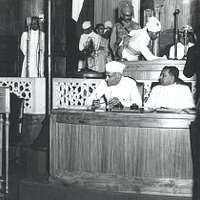

An academic essay on the question of legality and morality in old English texts through the analysis of the use of the word unrihte in the last half of Beowulf. Click here to read the paper!

An academic essay analysing the rhetoric used in Pandit Jawaharlal Nehru's inaugural speech on the eve of India's independence. Click here to read my analysis!